A censoring screen for Giambologna's Ratto delle Sabine, whose geometry is derived entirely from where a text-prompted segmentation model looks. The model turns out to be blind to nudity and fluent in violence. The screen inherits that blindness and makes it walkable.
The brief leaves the undesirable quality to the student. The obvious move is to pick one — nudity, violence, the subject matter — and design something that hides it. I did not want to author that judgment, because it is both the least interesting part and the least true to how censorship operates. Censorship at scale is not a person's judgment about an object; it is a policy executed by a classifier that has never seen the object it is ruling on.
So I handed the definition over. I chose only the vocabulary: thirteen prompts spanning neutral anatomy, sexualized anatomy, and physical force. Everything after that is determined — what the model responds to, from where, and how strongly are the only inputs to the form, and no shape in the final object was drawn by hand. The result is wrong, and the wrongness is legible and attributable. That is the argument: a censoring apparatus whose criteria you can read off its silhouette.
A scanned mesh of Giambologna's Ratto delle Sabine (1579–83), 1,493,064 vertices: three interlocked nude figures, at once a museum centrepiece and a depiction of abduction [F1]. It was chosen because the two candidate undesirable qualities — nudity and sexual violence — are inseparable in it. Any honest intervention has to choose between them, or reveal that it cannot tell them apart. The file arrived Y-up and was rotated −90° about X into Z-up: bounding box 56.3 × 44.8 × 116.1 units.
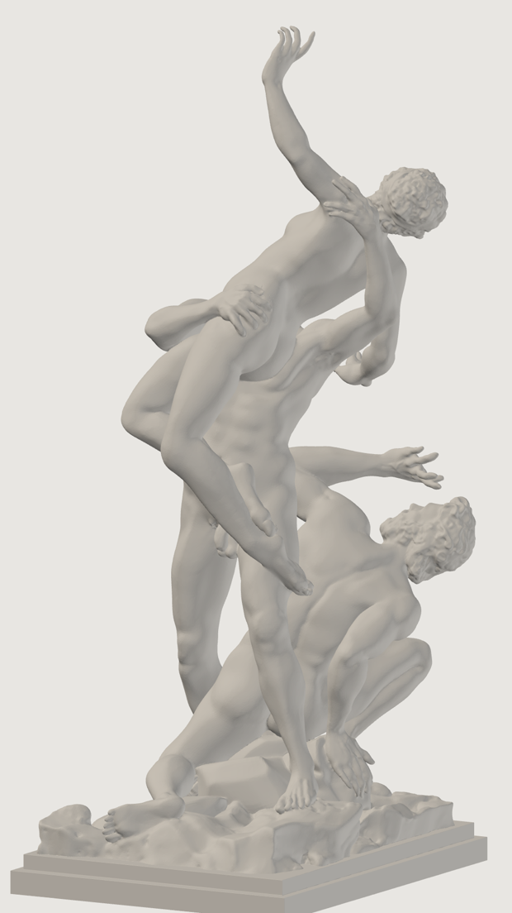
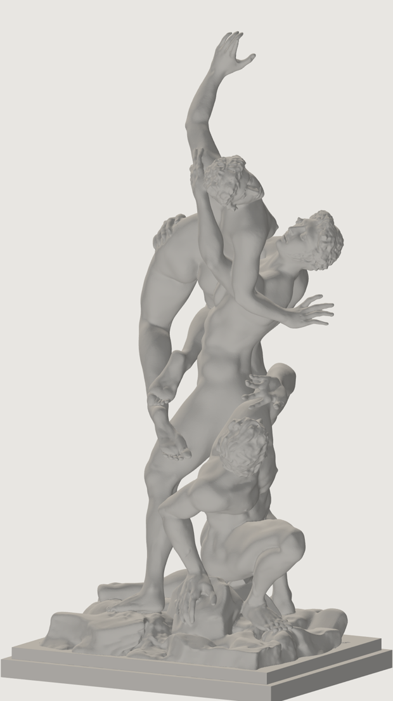
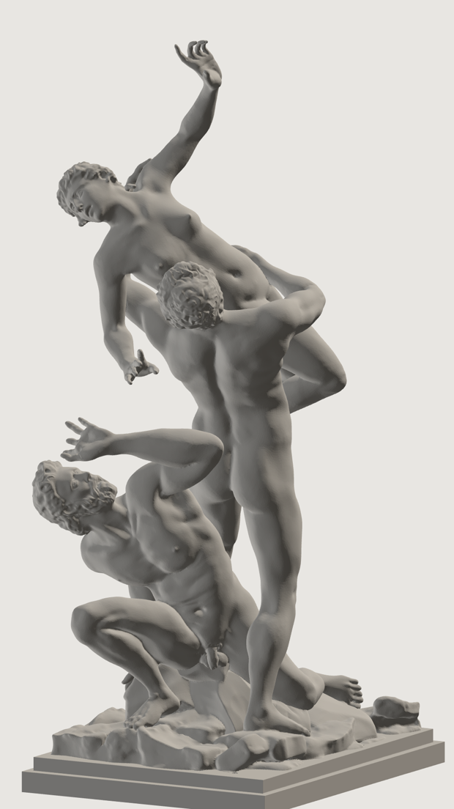
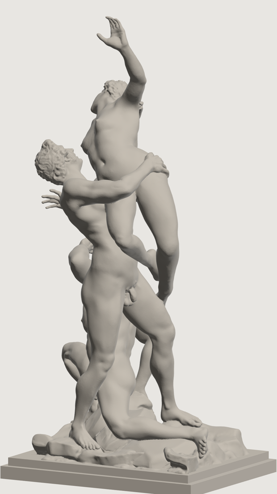
F1 — Giambologna, Ratto delle Sabine, 1579–83. Scanned mesh, 1.49M vertices, four azimuths 90° apart. The figura serpentinata never presents the same reading twice; there is no front.
The mesh is rendered in three.js from N cameras on a ring, each frame segmented by a text-prompted model, and the per-pixel values projected back onto the vertices through a depth test — an occluded vertex receives nothing. Settings: 24 cameras, 15° apart, elevation 10°, fov 40°, 512 px frames.
One constraint in the rig matters for the argument. Camera distance is fixed at radius / sin(fov/2) = 2.92 r, which puts the view cone exactly tangent to the bounding sphere. The camera is therefore always outside the object and always aimed at its centre: the apparatus cannot look from inside, cannot move closer, and cannot choose what to look at [F2]. It is a surveillance ring, not an eye. A side effect is that a tall narrow object wastes most of the frame, so the absolute values below are small and only their ratios carry meaning.
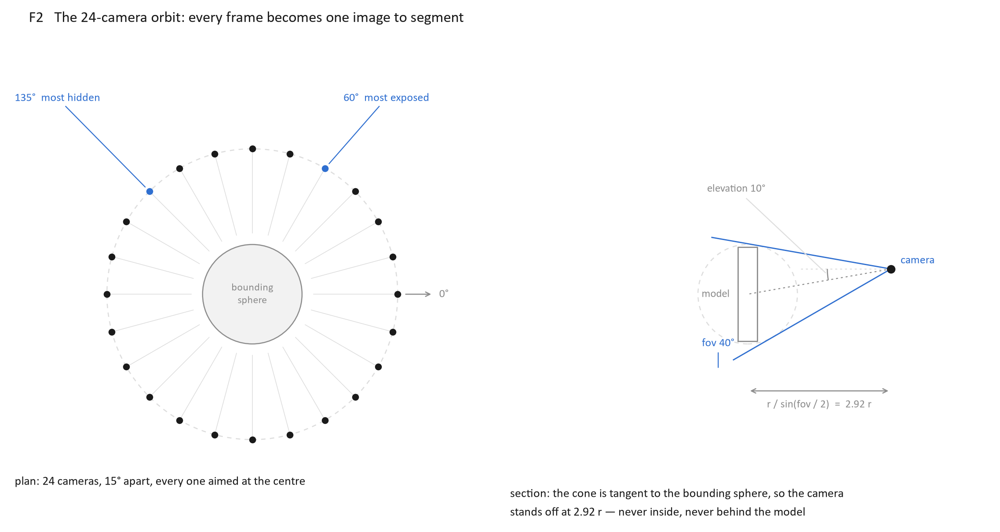
The first attempt used raw CLIP ViT-L/14 patch similarity. Asked for genitals, the strongest response sits in the empty background, not on the body [F3]. Put six anatomical prompts in competition and the white field gets carved into anatomical regions [F4] — the model assigns body parts to nothing at all. This is a known property of CLIP's final attention layer: patch tokens carry global image semantics rather than localized ones, so they are not in the text embedding space the similarity assumes. I report it because the failure mode is the subject — an apparatus that confidently labels empty space is precisely the kind deployed at scale. Everything after this uses CLIPSeg (rd64-refined), which has a decoder trained for localization.
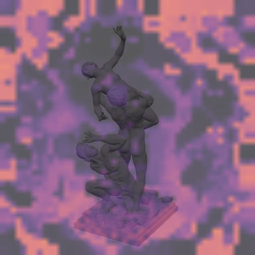
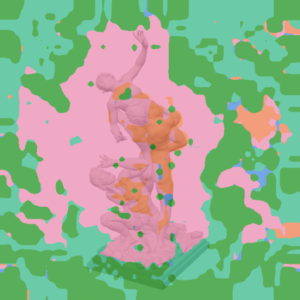
Thirteen prompts, peak mask value for each, measured on a single frame at azimuth 210°, resolution 672:
| prompt | peak | kind |
|---|---|---|
| a face | 0.879 | neutral anatomy |
| thigh | 0.852 | neutral anatomy |
| a hand | 0.849 | neutral anatomy |
| a struggling woman | 0.808 | force |
| a hand gripping a body | 0.665 | force |
| a man lifting a woman | 0.650 | force |
| a restrained arm | 0.601 | force |
| genitals | 0.258 | sexualized anatomy |
| pubic area | 0.143 | sexualized anatomy |
| bare breast | 0.051 | sexualized anatomy |
| buttocks | 0.018 | sexualized anatomy |
The model puts a face on exactly the two visible heads [F5] and thigh precisely on the standing man's thigh [F7]. Asked for bare breast — on three nude bodies, in the same frame, by the same model — it returns 0.051: nothing, anywhere [F6].
My first reading was that the model cannot resolve individually named parts and only understands whole figures. The thigh and a hand results disprove that, and I keep the wrong reading here because correcting it is what produced the finding. The line is not part versus whole, nor specific versus generic. The line is whether the word has been sexualized. Neutral anatomy is sharp; sexualized anatomy is absent. The absence is manufactured upstream: training corpora are filtered for NSFW content, and a term scrubbed from the captions a model was trained on cannot be grounded at inference. The model is not refusing. It genuinely has no idea what a breast is.
Meanwhile a struggling woman peaks at 0.808 and lights the abducted figure up as a coherent whole [F8]; a hand gripping a body, a man lifting a woman and a restrained arm all clear 0.60. The violence is entirely legible. An automated censor, pointed at a sculpture of a rape, sees the assault and not the nipple.
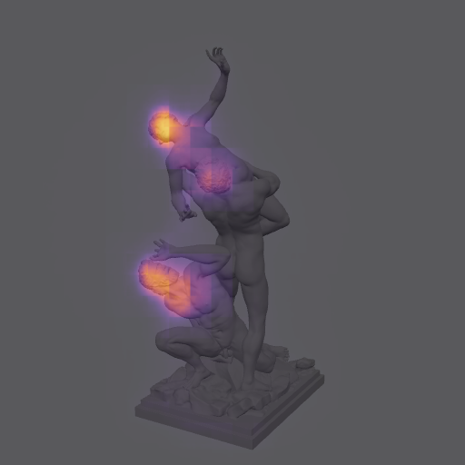
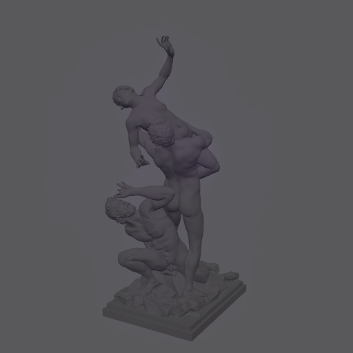
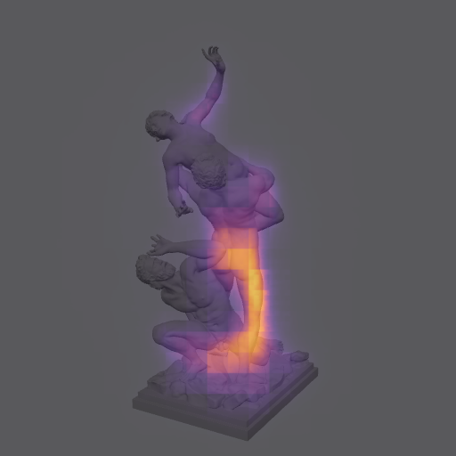
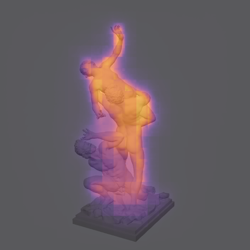
Using a nude human body — the highest-scoring prompt that still refers to the body as such — I measured the mean mask value at each of the 24 azimuths [F9]. It varies by 2.2×: a peak of 0.0731 at 60°, a trough of 0.0331 at 135°. At 60° the abductor's torso faces the camera square-on [F10]; at 135° the three figures stack into a narrow column and occlude one another [F11].
This is the result that turns measurement into architecture. The quantity being censored is not a property of the object — there is no the nudity sitting on the mesh waiting to be covered. There are angles from which the apparatus objects and angles from which it does not, which means censorship here is not a question of what to hide, but of where the viewer is permitted to stand.
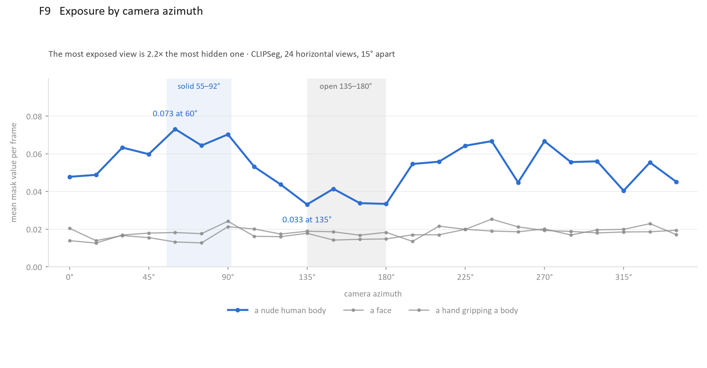
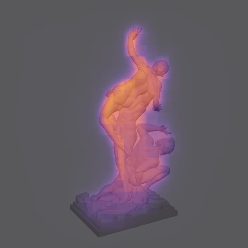
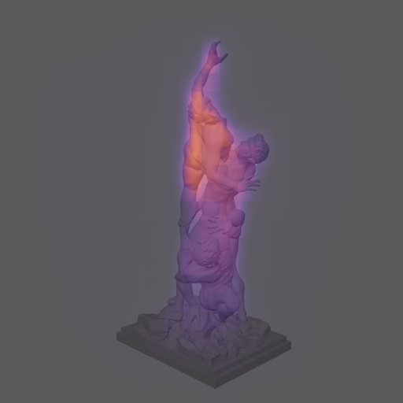
The 24 maps are averaged per vertex and written back onto the mesh as vertex colours [F12]. 1,434,801 of 1,493,064 vertices — 96.1% — receive a value. The remaining 58,263, or 3.9%, are never visible from any camera on the ring: interior crevices between the three bodies, undersides, the surfaces where the figures press against each other. They are by definition invisible in F12; the number can be stated but not pictured.
Those vertices are also where the sculpture is most intimate. Giambologna's composition already censors itself: the parts a classifier would flag are the parts the figura serpentinata has folded inward, and the group spirals so that its most exposed moment is a function of orbit rather than of surface. The apparatus and the sculpture are doing the same thing by different means, four hundred years apart.
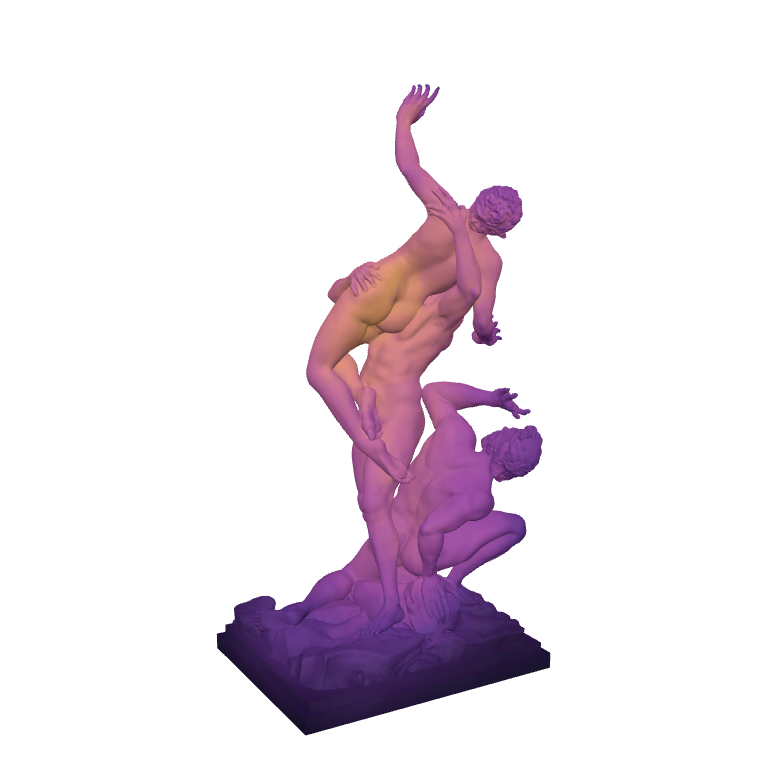
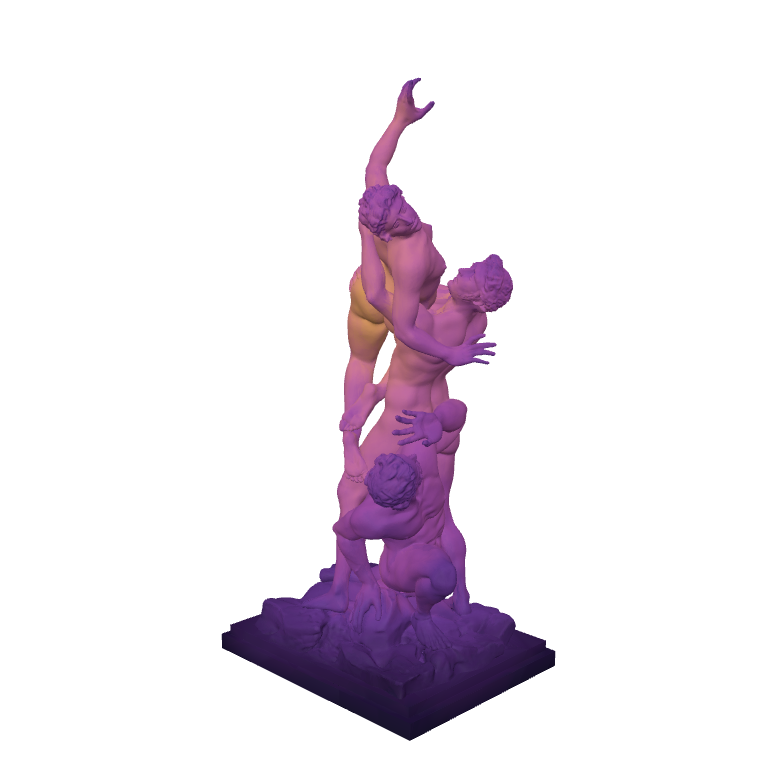
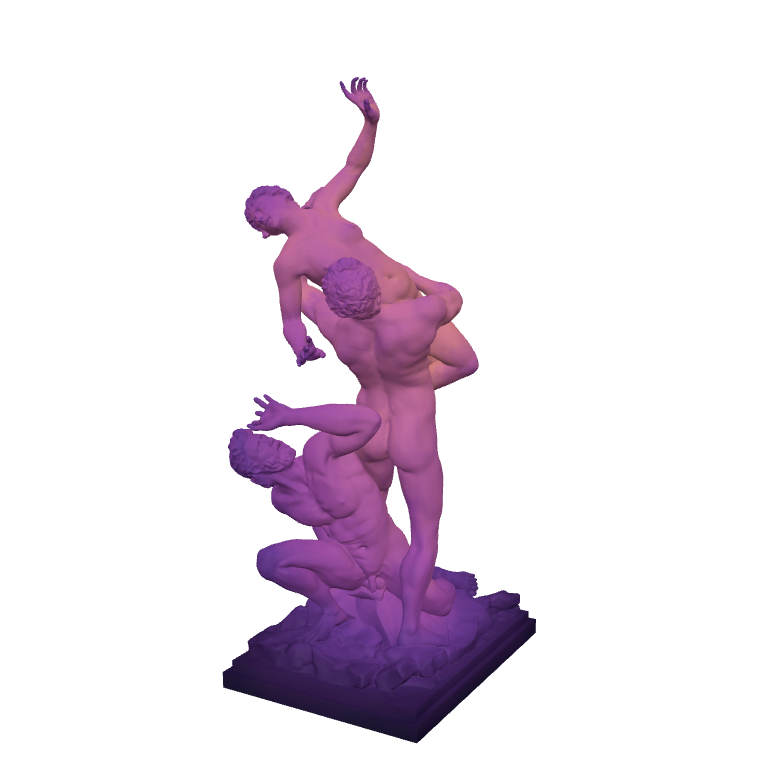
F12 — The mesh carrying the averaged attention as vertex colour; warm where the model looked hardest. The 3.9% of vertices no camera ever saw keep their clay colour and are, by definition, not visible here.
The screen is computed, not designed. A cylinder of vertical fins at radius 46, height 122, one fin every 2.5°, each 0.9 units thick, in three stacked segments. The half-width of each fin is the normalized exposure measured at that azimuth. Where the model saw most, the fins grow until they meet their neighbours and the screen closes; where it saw least, they thin to nothing and are omitted — 135 of a possible 144 fins exist, and 9 fall below the threshold and simply do not appear.
The result is more than 85% closed from 55° to 92° and fully open from 135° to 180° [F13]. Nothing about those two arcs was chosen; they are the exposure curve extruded into section. Walking the orbit, the group sits behind a solid white wall at 55° and 75°, begins to appear by 115°, and stands completely unobstructed at 160° [F14]. Across the far half of the circle, where the readings were middling, the screen neither fully closes nor fully clears [F15]. The animation runs the same ring at 5° steps rather than 15°, so the viewer's circuit is a finer-grained replay of the measurement, drawn in orthographic projection so that fin widths stay proportional to the values that generated them. Where the ring looked hardest, the ring now looks back.
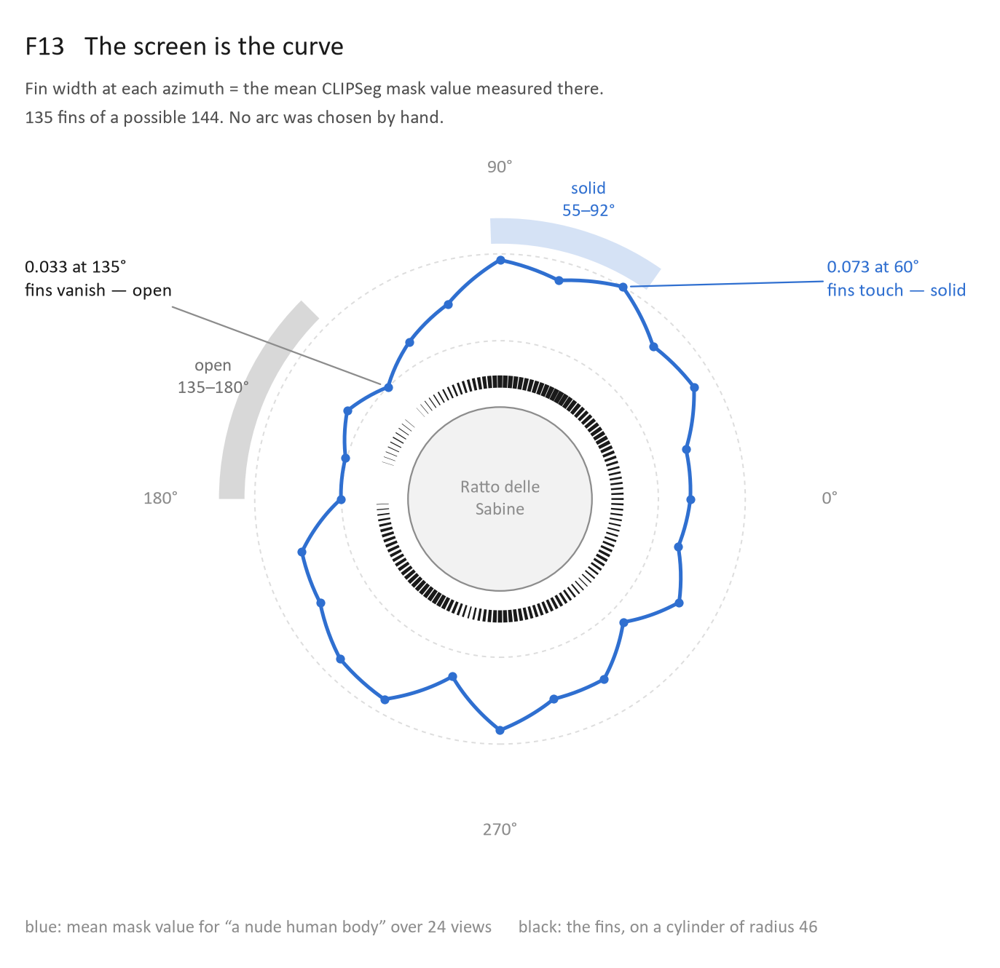
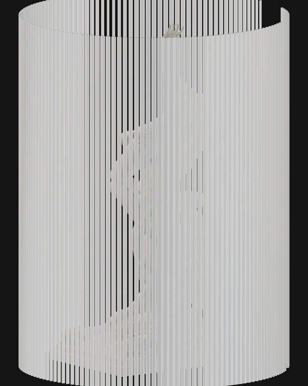
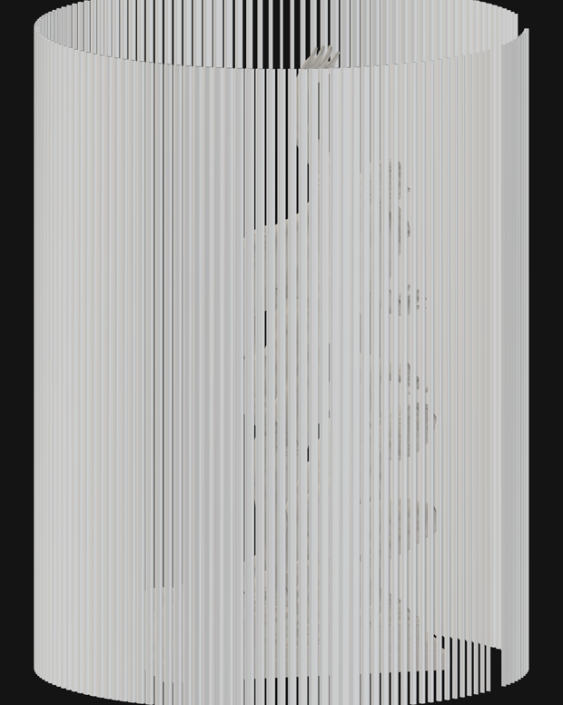
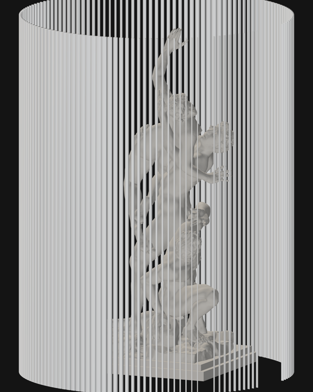
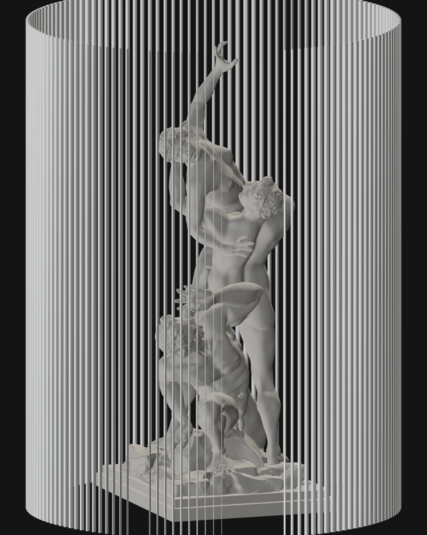
F14 — The closing arc, walked: solid at 55° and 75°, opening at 115°, fully open at 160°. No fin was placed by hand; each one is as wide as the value measured at its own azimuth.
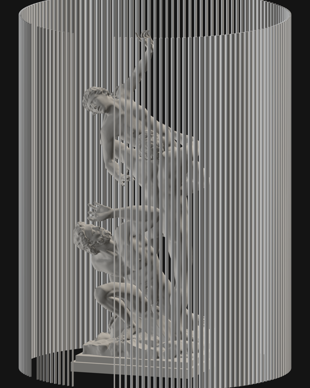
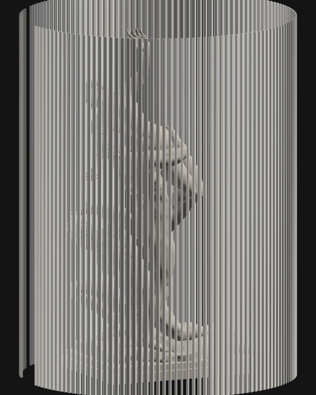
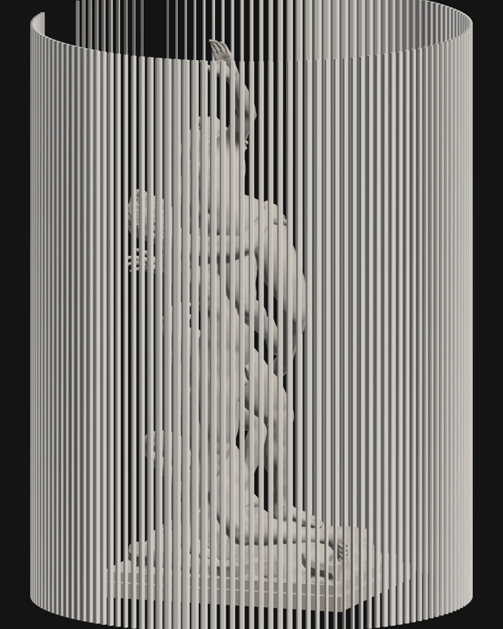
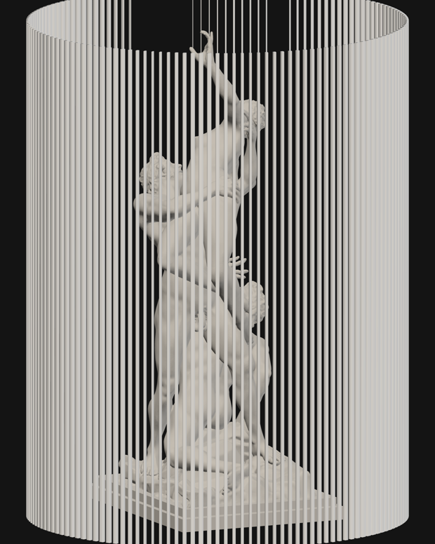
F15 — The far half of the orbit, where the model's readings were middling: the screen never fully closes and never fully clears. Together F14 and F15 sample the full circle at eight stations.
The criteria are visible. A conventional censorship bar tells you that something was removed and nothing about why. This screen's silhouette is its policy document. You can stand at 160°, see the entire group, and know that the apparatus found nothing there to object to.
The policy is incoherent, and the incoherence is the content. The screen is thickest where a single body faces outward and thinnest where three bodies are tangled most violently together. A viewer who walks the open arc is handed the clearest available view of the abduction, with the apparatus's full approval. What is protected is not the public but the training set's own squeamishness, which registers a nipple as a liability and an assault as a scene.
The authorship is partial, and that is the point. I chose thirteen words, which is a real editorial act. But I did not decide which would register, where they would peak, or what shape would come out. To change the form you change the twenty-four numbers in EXPOSURE in make_screen.py — which is to say you change the model, or the prompts. That is also how content moderation gets changed in practice, and it is why the result reads less like a design than like a policy made spatial.
Models. CLIPSeg rd64-refined (all reported measurements); CLIP ViT-L/14 datacomp and DINOv2 ViT-B/14 (§4.1, reported as a negative result).
Parameters. 24 views · elevation 10° · fov 40° · 512 px frames · clay material · segmentation resolution 672 · competition on, temperature 0.3.
Screen. Radius 46 · height 122 · fin thickness 0.9 · one fin per 2.5° · 3 vertical segments · 135 of 144 fins built.
Rendering. The final renders do not come from the segmentation app, which applies one material to the whole scene and so cannot distinguish the screen from the sculpture. The two layers are exported to raw binary geometry by export_bin.py and rendered by render_orbit.html (three.js r128): sculpture in mid-grey stone, screen in opaque white, black field, orthographic camera, 2× supersampling. The black field is load-bearing: with the gaps between fins reading black, the screen's opening and closing is legible in silhouette alone.
Scripts. make_screen.py regenerates the geometry from the 24 numbers in EXPOSURE; figs_v2.py, fig_f2_v3.py, fig_f9.py generate the drawn figures.
Animation. sabine_screen_orbit_white.mp4 — 800 px, 72 frames, 4 s, orthographic, one full orbit on the analysis path.
Files. Three .3dm (rotated input, vertex-coloured mesh, screen + sculpture), the orbit .mp4, 27 segmentation maps, 18 figures, and the scripts that regenerate all of them. All under 07_segmentation/outputs/.